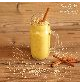
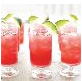
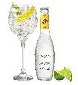

CóctelesLos cócteles son unas mezcla de licores, jugos de frutas o bebidas gaseosas que según el momento de tomarlo y su composición podemos clasificarlos en aperitivos, digestivos, nutritivos o refrescantes. |
Batido de mango chai

Receta de Batido de mango chai Dificultad: baja Cocina: horno Vegetariana: sí Celíacos: sí Anticáncer: no 


Autor: El arte de cuidar T |
|---|
Cóctel de piruleta o Kojak

Receta de Cóctel de piruleta o Kojak Dificultad: baja Cocina: tradicional Vegetariana: no Celíacos: no Anticáncer: no
|
Gin Tónic

Receta de Gin Tónic Dificultad: baja Cocina: tradicional Vegetariana: no Celíacos: no Anticáncer: no
|